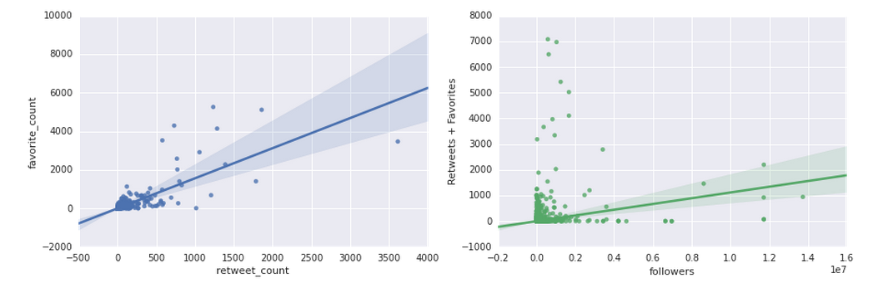

The point of our project is to analyze what it is that makes a tweet from Twitter trendable. We created a Machine Learning algorithm that analyzed which predictors were most important when it came to determining how well a tweet 'trended'.
Twitter has revolutionized the way the world fundamentally communicates. With the click of a button, we are able to share stories, pictures, and ideas basically instantly. This has created an urgent want to be heard, accepted, and well-liked. Many social networking sites already prize these qualities through Facebook "likes" or Tumblr "notes," and Twitter is no exception. Having a trending tweet is what most users seek to accomplish. And this is where our project comes in.
We obtained data extracted using the twitter API. Since many retweets appeared to have duplicate information, we decided to only study the original tweets. Before diving into the machine-learning component of our project, we gathered initial results to observe correlations among predictors in our dataset. This diagram is representative of most of the correlations we found, where we didn't really find anything shocking or unusual.
We also constructed regression lines, with 95% confidence intervals, on the relationships between retweets and favorites and retweets+favorites and number of followers. If anything, these diagrams show that tweets tend to become popular if the author is already well-liked to begin with!

For the machine learning component of this project, we decided to use a random forest classifier to determine the most predictive features of a tweet. Favorites and followers seem to be the two most predictive features of a tweet. We definitely didn’t need this algorithm to determine this conclusion, but it is at least interesting for our analysis to see that the other features aren’t very predictive.
We learned a lot about the data itself in Twitter but not enough to write our own tweets that will become internet famous. The most important factor in a tweet's "trendability" is the popularity of your account. In simple terms this means that the more people you interact with on Twitter, the more likely your tweets will be popular.
As detailed previously, we explored our data by using the Twitter API to pull tweets, then formated the data to look for correlation between features, and used machine learning to try and predict how "trendable" a tweet would be. Overall, we were not able to predict tweets as well as we hoped, since we wanted to learn how to create our own trendable tweets, but we learned the most important factor in trendability is how many people you are connected with on Twitter. Go figure!
We hope you enjoyed the show.
Love,
The Twitter Bros